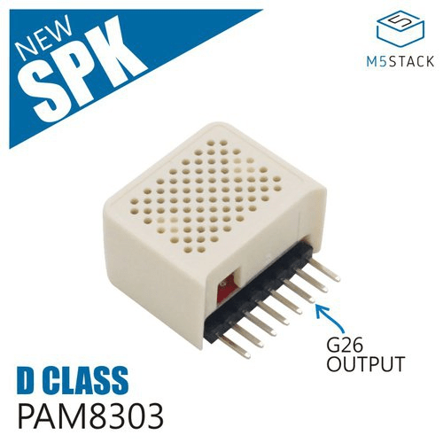
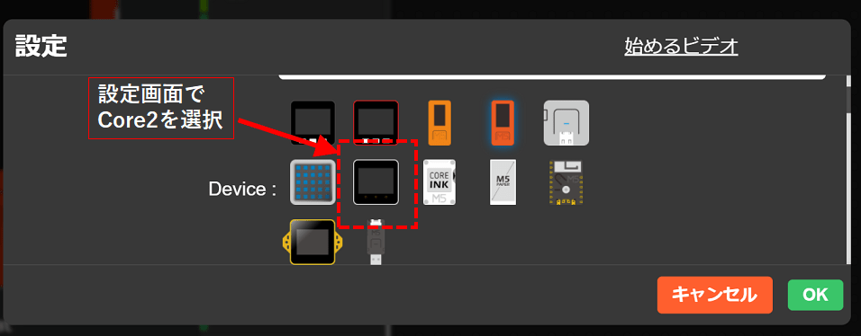
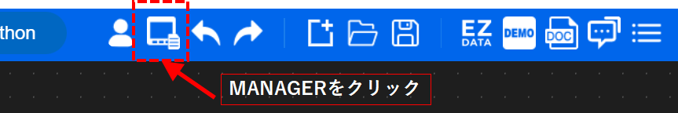
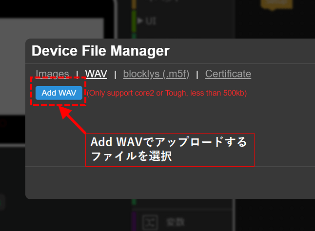
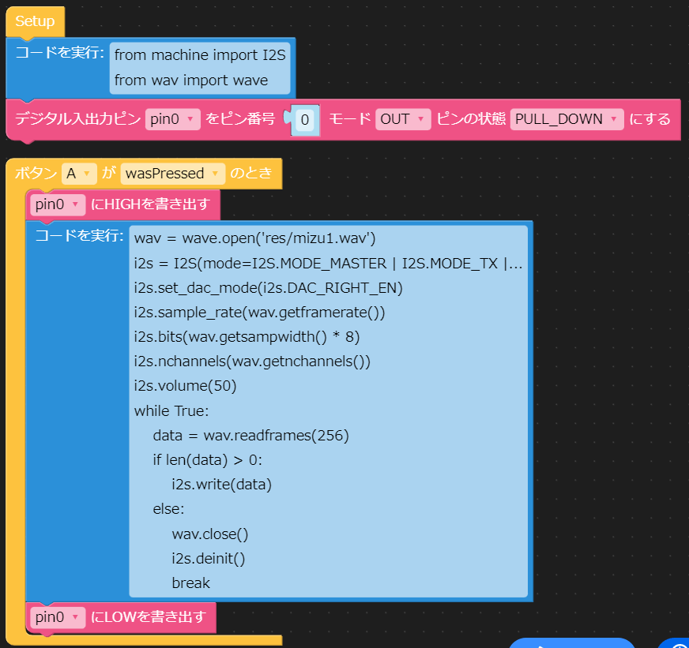

2022/3/10
M5StickCとSpeakerHatでwavを再生する
←M5StickCです
M5StickCとは、小型（消しゴムサイズくらい）ながら多機能を備えたマイコンボードです。
M5StickCには「HAT」と呼ばれる拡張モジュールが用意されており、HATを装着することにより、様々な機能を追加できます。
本記事では、SpeakerHatを使用して、wavファイルを再生していきます。
また、プログラムはUIFlowを使用します。
UIFlowについてはこちらを参照ください。
※注
本記事の方法でwav再生できるのは、UIFLOWのバージョンが1.7.5のものになります。
1.9以上のものはI2Sクラスの中身が異なっており、再生することができませんのでご注意ください。
詳しくは末尾の "（参考）micropythonについて" を参照ください。
SpeakerHatについて
 ←Speaker HatはこんなのSpeakerHatの中にはアンプとスピーカーが入っています。
M5StickCのG26ピン（内蔵DAC出力）から音声信号が出力され、Speaker Hat内のアンプで増幅してスピーカーで音を出します。
アンプはPAM8303というICを使用しています。
回路図は↓↓です。
/SD端子（シャットダウン）がG0に繋がっていて、G0をLowレベルにすると音声出力が止まります。
UIFlow(micropython)のI2Sクラスについて
M5StickCから音声信号を出すために、machineモジュールのI2Sクラスを使用します。
I2Sクラスの内容および説明は、下記のページが参考になります。
M5StickC UIFlow非公式日本語リファレンス
espressif Inter-IC Sound (I2S)
これらを使ってwavファイルを再生します。
wavファイルを再生するプログラム
まず最初に、wavファイルをM5StickCへアップロードします。
UIFlowの設定画面でCore2を選択します。(M5StickCの設定だと50kbまでしか転送できないので)
※M5StickCが使えるメモリは少なく、転送ファイルは合計1Mb以下程度に納めることをお勧めします。

その後、MANAGERアイコンをクリックし、wavファイルを転送します。
画面はCore2になっていますが、ちゃんとM5StickCへファイル転送できます。


wavファイルを再生するには下記のプログラムを実行します。
from machine import I2S
from wav import wave
wav = wave.open('res/<ファイル名.wav>')
i2s = I2S(mode=I2S.MODE_MASTER | I2S.MODE_TX | I2S.MODE_DAC_BUILT_IN)
i2s.set_dac_mode(i2s.DAC_RIGHT_EN)
i2s.sample_rate(wav.getframerate())
i2s.bits(wav.getsampwidth() * 8)
i2s.nchannels(wav.getnchannels())
i2s.volume(50)
while True:
data = wav.readframes(256)
if len(data) > 0:
i2s.write(data)
else:
wav.close()
i2s.deinit()
break
UIFlowで実行するには下記のようにします。
pin0は、SpeakerHat内のアンプのON/OFFをしています。
wavファイル名指定のところを変えるのを忘れずに。

これをM5StickCへ転送してボタンを押せば、wavファイルを再生できます。
カスタムブロックの作成
UIFlowにはブロックを自作する機能があります。
先ほどのwav再生のプログラムのブロックを作成しておくと、何度も使うときにいちいちコピペしなくて良くなり便利です。
ブロックの作り方は以下を参照ください。
例として、wavファイルを再生するブロックの作成方法の説明があります。
M5Stack向けのVisual Programming「UIFLOW」でカスタムブロックを作成する
M5StickC購入先
秋葉原へ行くと秋月電子やマルツで購入できます。
また、オンラインですとamazonのスイッチサイエンスショップでも購入できます。
（参考）micropythonについて
UIFLowはmicropythonをベースに作成されています。
micropythonとは、pythonをマイコン上で動かせるように最適化したものです。
主にesp32系のマイコンでよく使われているようです。
特徴として、pythonで書けるので記述がシンプルになるのと、REPLと呼ばれるインタープリタが使用できデバッグしやすいなどがあります。
また、オープンソースで以下で公開されています。
micropythonには、loborisという派生バージョンがあります。
色々違いはあるのですが、I2Sクラスを使って内蔵DACで音声再生ができる機能が追加されています。
github MicroPython_ESP32_psRAM_LoBo
UIFlowはver 1.7.5ではloboris版をベースに作成されていますが、最新版ではmainstream版で作成されています。
mainstream版では、I2Sクラスで内蔵DACから音声データを出力することができません。
なので、本記事の方法でwavデータを再生することができなくなっています。
再生する他の方法としては、UIFlowではなくArduinoを使う、外部にI2S対応アンプをつなげてI2Sで音声を出力するなどがあるかと思います。
以上です。